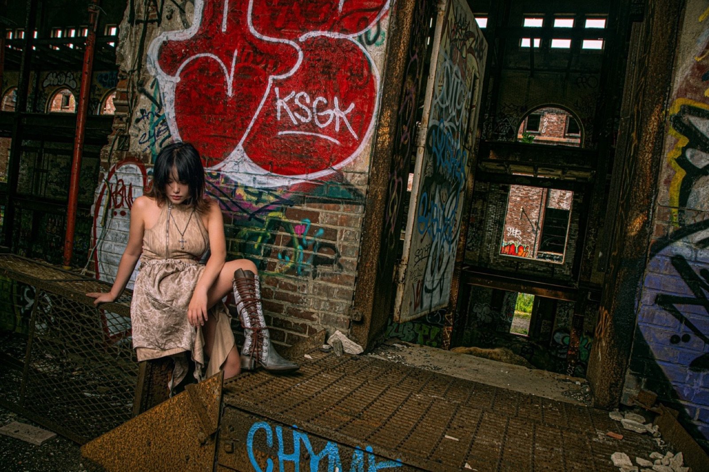
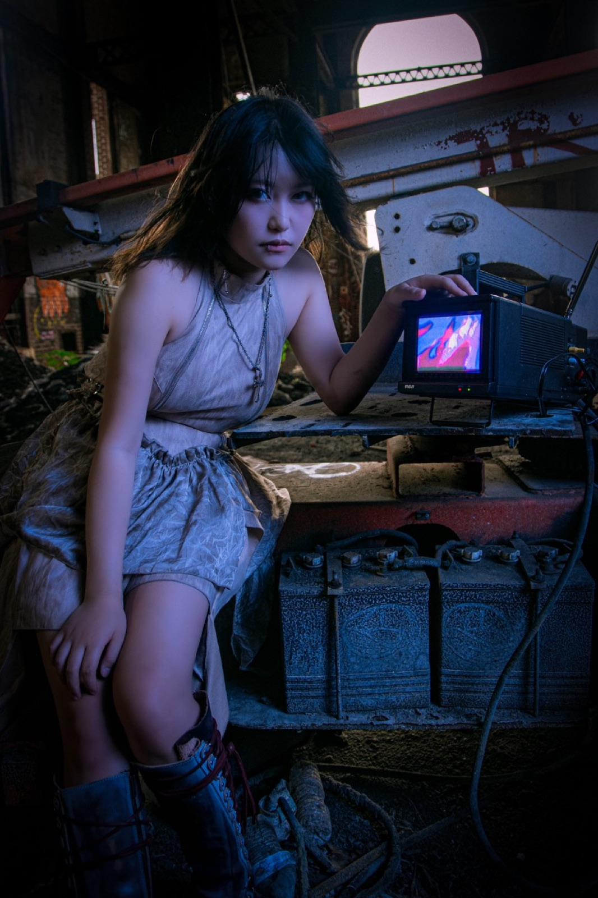
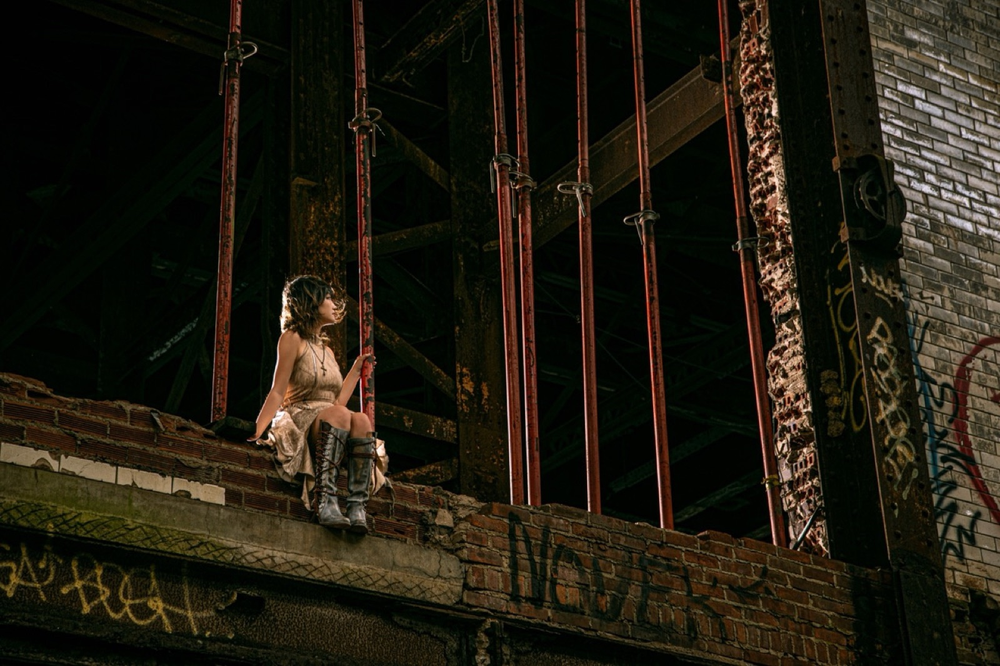
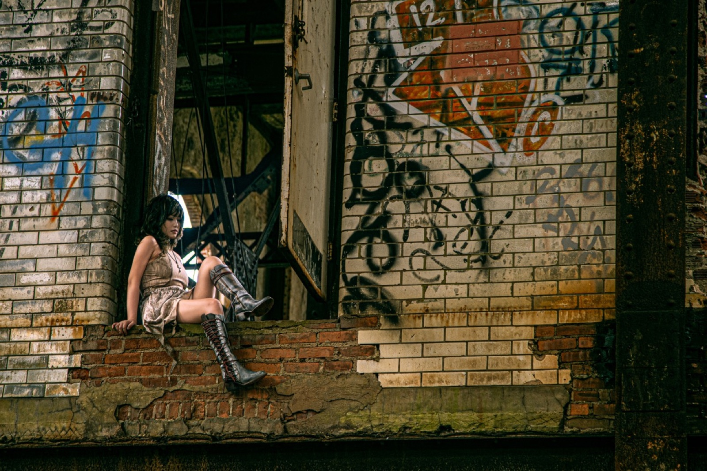
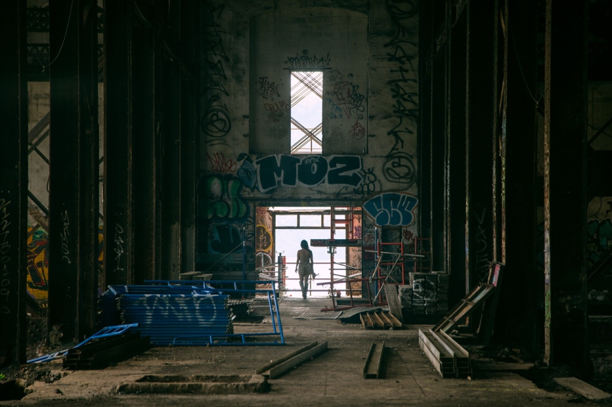
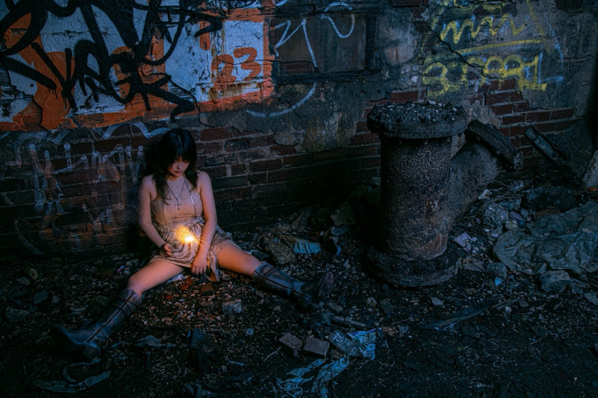
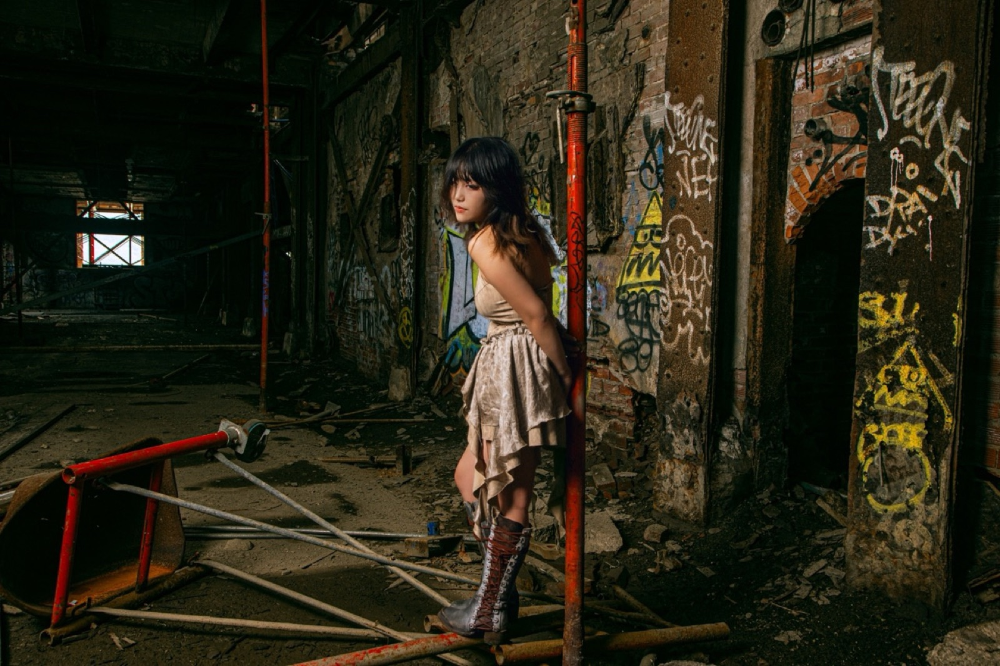

Remembrance and Forgotten
Remembrance and Forgotten is a photographic series that explores themes of isolation and emotional detachment through staged portraits set within abandoned spaces. The work pairs solitary figures with obsolete objects—vintage televisions, retro gaming consoles, and fireworks—creating scenes that speak to our futile attempts to find connection in a world of decay.
The series examines a particular kind of numbness that emerges when surrounded by collapse—both architectural and emotional. Through careful composition and lighting, the images reveal how we seek distraction and solace even in desolate environments. The juxtaposition of human figures against decaying backdrops, engaged with outdated forms of entertainment, speaks to a broader contemporary condition: our struggle to maintain connection and meaning in an increasingly fragmented world.
Credit: Jade Zhang - model






